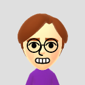
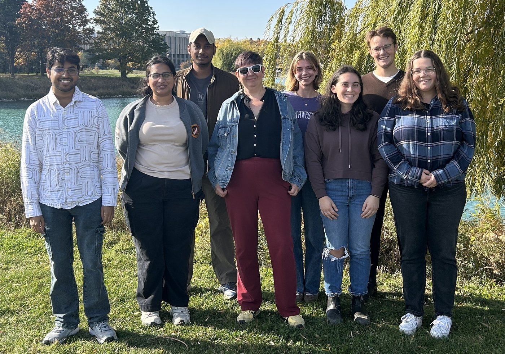
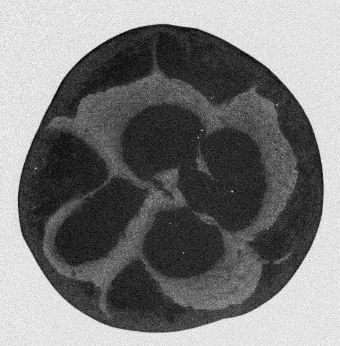

Physics PhD student, Northwestern University
I'm a third-year physics PhD student at Northwestern. I work with Michelle Driscoll on shear thickening and soft matter. Before grad school I was in Paul Territo's group at the Stark Neurosciences Research Institute at Indiana University School of Medicine, and before that I did physics and neuroscience at Earlham College.
I study dense suspensions. These are mixtures where the particles are packed so tightly into the liquid that how they push on each other decides how the whole thing flows. The question I keep coming back to is what happens right at the edge between flowing and jammed, and how much of that is set by particle contacts and the structure they form.
Impact and relaxation in shear-thickened suspensions. Push a dense suspension hard enough and its viscosity can jump by orders of magnitude (discontinuous shear thickening, or DST). I look at how different suspensions behave on the way to DST and past it, and at which particle properties decide whether the stuff keeps flowing or turns almost solid. The experiments are bulk rheology plus drop impacts, which give me a way to look at fast free-surface flows.
Jamming and the shear-thickening transition. Jamming is the point where a pile of particles stops being able to flow at all, and it sits close to shear thickening. I'm trying to work out how being near that point changes the rheology under different flow protocols, and how the short-lived transient behavior near jamming lines up with the steady-state picture.
Before physics: PET imaging. At Indiana I worked on PET neuroimaging, tracer development, and mouse models for Alzheimer's disease research. Most of my time went into quantitative image analysis and whole-brain network methods for metabolic and vascular changes in aging and diseased mice.
Nothing out yet. Google Scholar will have things first.


cpb@u.northwestern.edu. Email me about research, working together, or books you think I should read. I'm also on Goodreads.
Leave a note. I read everything, and the ones I approve show up below.